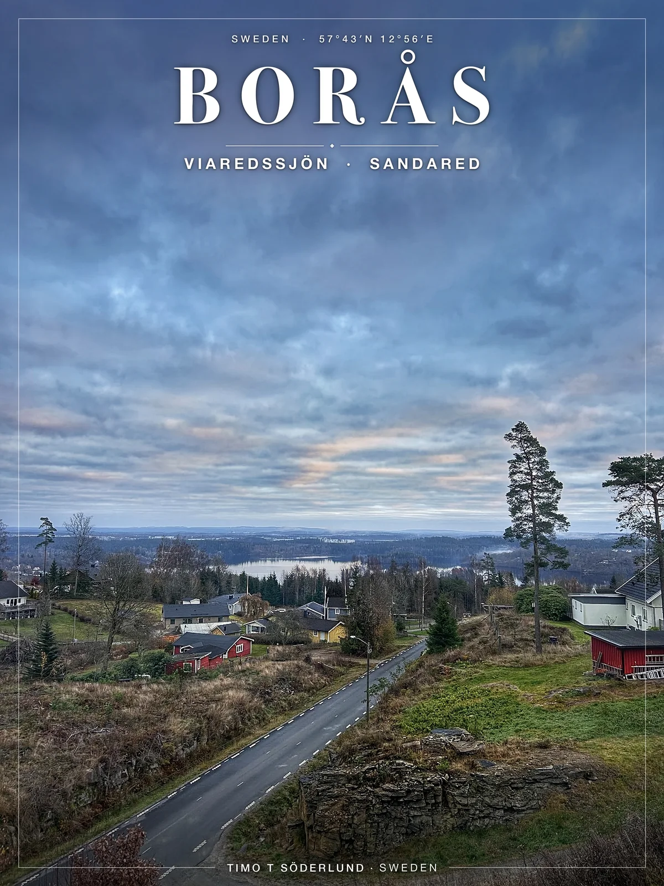

Viaredssjön · Sandared
Lakeside Village, Modern Villas & Ridges · Sandared, Borås, Sweden
English
Nestled along the scenic shores of lake Viaredssjön in Borås Municipality, Sweden, Sandared harmoniously blends traditional Faluröd timber houses with modern, architect-designed lakeside villas. Behind the tranquil water's edge, forested ridges rise up to 100 metres above the lake surface, offering spectacular panoramic vistas across the region around Borås. Photographed in sculpted magic-hour light by Timo T Söderlund for Borås Poster Project 2026 in Boras, Sweden.
Svenska
Beläget längs Viaredssjöns vackra strandremsa i Borås kommun förenar Sandared traditionella faluröda trähus med moderna arkitektritade villor. Bakom den stilla strandlinjen reser sig skogsklädda åsar upp till 100 meter över sjöns yta och erbjuder en spektakulär utsikt över bygden kring Borås. Fotograferad i varmt skulpterat kvällsljus av Timo T. Söderlund för Borås Poster Project 2026.
Photographer & Edition: Timo T Söderlund · Borås, Sweden (2026)